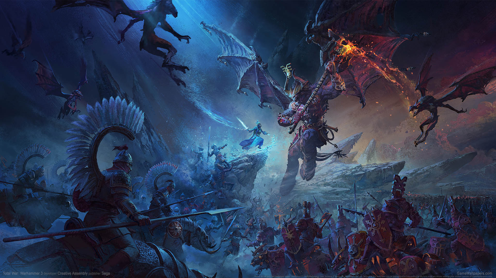

Total War Warhammer 3 Is a turnbased Realtime strategy game developed by Creative Assembly where the player takes control of several characters from the Warhammer fantasy universe the game is the htird in a series of Total War Warhammer games with the first game being released in 2016. the game has gotten several DLCs along with Immortal Empires witch combines the maps and factions of the earlier games to make one big map with several factions spread throughout it.
